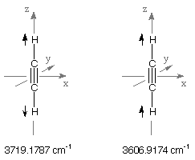
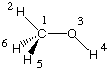

Assigning Vibrational Frequencies
Calculation of the vibrational frequency spectrum of a nonlinear molecule containing N centers leads
to 3N-6 true vibrational normal modes (linear molecules: 3N-5). As these are usually not localized
motions of a small part of the molecule, assignment of the individual modes can, particularly in larger
systems, be somewhat difficult. Several strategies can be used to facilitate the assignment. These
strategies will be illustrated using two small model systems: acetylene (C2H2)
and methanol (CH3OH). Optimization and frequency calculations have been done in both
cases at the HF/6-31G(d) level of theory.
1) Assignment using symmetry properties
Acetylene is a highly symmetric molecule of D(infinite)h symmetry. The overall seven
(3N-5) vibrational frequencies calculated for acetylene are therefore labeled according to four
of the irreducible representations of this point group. The groups of type "PI" designate pi-type,
degenerate irreps while the label "SG" designates irreps of sigma-type. The latter are not degenerate.
The modifiers "G" and "U" designate irreps that are either symmetric (G) or antisymmetric (U) with
respect to the center of inversion. Due to its center of inversion acetylene has no dipole moment.
At this point it is helpful to remember that only normal modes accompanied by a change in dipole
moment will be IR active. Also, only those modes involving a change in polarizability will be
Raman active. For the current case we note that all modes of G-type (symmetric with respect to
the center of inversion) do NOT lead to a change in dipole moment and consequently describe
IR-inactive vibrational frequencies. This characteristic is quite helpful in assigning
the last two vibrational frequencies located in the region of C-H stretching vibrations. The higher
of these at 3719.1787 cm-1 is of SGG type and therefore must correspond to the
symmetric combination of the two C-H stretching motions. The lower
value at 3606.9174 cm-1 is of SGU type and must consequently correspond to the
antisymmetric combination of the two C-H stretching motions.
frequencies
(cm-1) | irrep | IR intensities |
|---|
| 793.9630 | PIG | 0.0000 |
| 793.9630 | PIG | 0.0000 |
| 882.5875 | PIU | 100.4271 |
| 882.5875 | PIU | 100.4271 |
| 2246.9882 | SGG | 0.0000 |
| 3606.9174 | SGU | 81.2929 |
| 3719.1787 | SGG | 0.0000 |
| |
 |
In a similar manner the symmetry properties can be used to assign the central C-C stretching mode at
2246.9882 cm-1 and the out-of-plane H-C-C bending modes at lower wavenumbers.
Methanol is a much less symmetric system whose most stable conformation is of Cs symmetry.
This property can be represented in the following Z-Matrix:
#P HF/6-31G(d) freq
HF/6-31G(d) freq methanol staggered
0 1
H1
C2 1 r2
O3 2 r3 1 a3
H4 3 r4 2 a4 1 180.0
H5 2 r5 3 a5 1 d5
H6 2 r5 3 a5 1 -d5
r2=1.08105957
r3=1.39956997
r4=0.94629421
r5=1.08744287
a3=107.170012
a4=109.447010
a5=112.035787
d5=118.773010
| |
 |
With this definition, all atoms but H5 and H6 are located in the principal symmetry plane of the
system. The computed vibrational normal modes are given in the output file in a format that
includes, among others, 1) the irreducible representation, 2) the vibrational frequency
(in cm-1), 3) the force constant of the normal mode, 4) the IR intensity, and
5) the X-, Y-, and Z-components of each of the atoms in the eigenvector. The entries for
the highest three vibrational frequencies are:
10 11 12
A" A' A'
Frequencies -- 3231.1397 3305.4721 4117.5328
Red. masses -- 1.1064 1.0990 1.0670
Frc consts -- 6.8056 7.0747 10.6579
IR Inten -- 100.1927 49.0514 40.7770
Raman Activ -- 67.4524 74.5980 70.5247
Depolar -- 0.7500 0.5509 0.3097
Atom AN X Y Z X Y Z X Y Z
1 1 0.00 0.00 0.02 0.92 -0.27 0.00 -0.01 0.00 0.00
2 6 0.00 0.00 0.09 -0.09 0.01 0.00 0.00 0.00 0.00
3 8 0.00 0.00 0.00 0.00 0.00 0.00 0.06 -0.02 0.00
4 1 0.00 0.00 0.00 -0.02 0.00 0.00 -0.94 0.34 0.00
5 1 -0.33 -0.25 -0.57 0.07 0.06 0.16 0.00 0.00 0.00
6 1 0.33 0.25 -0.57 0.07 0.06 -0.16 0.00 0.00 0.00
In the last of these three entries it can be seen that the eigenvector is described by
the movement of essentially only one atom (hydrogen atom H4), moving in negative
direction on the X- and in positive direction on the Y-coordinate axes. These components
are given with respect to the molecular orientation listed as
Standard orientation in the upper part
of the output file. In the current example, the standard orientation assumes the
principal plane of the molecule to coincide with the XY-plane of the cartesian
coordinate system. In combination with the wavenumber of 4118 cm-1,
this mode can easily be assigned as the O-H stretching vibration. The
experimentally measured (anharmonic value) for this vibration is 3681 cm-1.
For the other two vibrations at 3231 and 3305 cm-1, respectively,
a straight forward interpretation is much more difficult due to the more complex
composition of the eigenvectors. A third vibration with similar composition
(contributions by hydrogens H5 and H6) is located close by at 3185 cm-1
and it may be speculated that all three vibrations describe some sort of C-H
stretching vibration. In this situation, the
Mulliken representations
of these three vibrations can help to differentiate the modes in terms of
their symmetry properties. The mode at 3231 cm-1 is of
A'' symmetry describing vibrations which are antisymmetric with respect
to the principal mirror plane, while the modes at 3185 and 3305 cm-1
are of A' symmetry describing vibrations which are symmetric with respect
to the principal mirror plane. These two representations (A' and A'') are
the only two irreducible representations of the Cs point group.
2) Assignment using animation with MOLDEN
The normal modes described in the output file can be animated with MOLDEN. After loading
the output file and activating the Norm. Mode button
in the upper right corner of the MOLDEN control panel,
a window appears containing a list of all normal modes. Selection of one of the
modes with the mouse pointer starts the animation of the corresponding normal mode,
the displacements used in the animation being controlled by the scale factor
field in the lower left corner of the window. The animation can be terminated through
de-selection of the Norm. Mode button.
3) Assignment using animation with GaussView
The normal modes described in the output file can be animated with GaussView.
After loading the output file ("Open . . " option in the "File" menu) visualization
of the normal modes can be activated selecting the "Vibrations . . " option in the "Results" menu.
Similar to MOLDEN a window appears containing a list of all normal modes.
Selection of one of the modes with the mouse pointer and activation of the "Start" button
initiates animation of the vibrational motion. Details of the animation can be
influenced with the "Frames/Cycle" and "Displacement" controls. An overall vibrational
frequency spectrum can be generated with the "Spectrum . . . " button.
Using these visual aids it is also possible to identify the lowest vibrational mode
at 348 cm-1 as the torsional vibration of the CH3 group (A''
symmetry). "Vibrations" of 300 cm-1 and below are frequently hindered
rotations which should, ideally, not be treated as true vibrations.
last changes: 11.11.2004, HZ
questions & comments to: zipse@cup.uni-muenchen.de